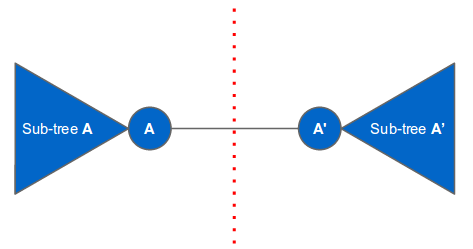
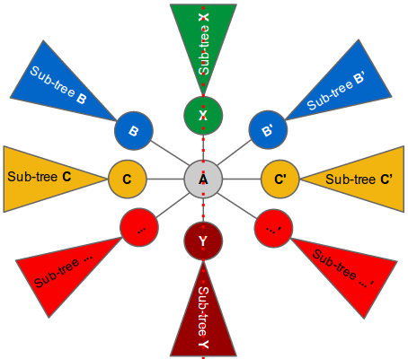

Video of Igor Naverniouk’s explanation.
Given a vertex-colored tree, we want to know whether it is possible to draw the tree in a 2D plane with a line of symmetry (as defined in the problem statement).
An important question to ask is: how many vertices in the tree are located on the symmetry line? We can categorize the answer into two cases. The first is where there is no vertex on the symmetry line, and the second is where there are one or more vertices on the symmetry line. We will discuss each category in the following sections.
This is the easier case. Since the tree has at least one vertex, there must be a vertex A on the left of the symmetry line connected to another vertex A’ on the right of the symmetry line. The rest of the vertices must belong to the subtree of A or to the subtree of A’. The only edge that crosses the line of symmetry is the edge connecting vertex A and A’. There cannot be any other edges that cross the line of symmetry (otherwise there would be a cycle). The last requirement is that subtree A and subtree A’ are isomorphic. We will elaborate later on how to check whether two subtrees are isomorphic. The following figure illustrates this case:
In this case, we can pick a vertex A and put it on the symmetry line. Next, we look at the children of A. Each child represents a subtree. For each child (or subtree) of A we find another (different) child of A that is isomorphic to it. If found, we can put one child on the left side of the symmetry line and the other on the right side of the symmetry line. The root nodes of the subtrees that cannot be paired must be put on the symmetry line. Since there are only two available positions on the line (one is above A and the other is below A), the number of children that cannot be paired must be at most two. These (at most) two children are put on the symmetry line using the same technique described above, except that they can only have one unpaired child (since they have only one available position on the symmetry line). See the following illustration:
We pair up all children of A that are isomorphic to each other (e.g., B and B’, C and C’ and so on) and put one of them on the left and the other on the right of the symmetry line. There can only be at most two remaining unpaired children (subtree X and subtree Y). We can recursively put X and Y on the symmetry line just above and below vertex A respectively. The subtree of X can only have at most one unpaired child since there is only one available position to put the unpaired child on the symmetry line (i.e., above X). Similarly with the subtree of Y.
The above placing strategies require a quick way of checking whether two subtrees are isomorphic. One way to do this is by encoding each subtree into a unique string representation and then checking whether the strings are equal. One way to encode a subtree into a string is by using a nested-parentheses encoding: starting from the root node of the subtree, construct a string that begins with “(“ followed by the color of the node, then a comma, followed by a sorted, comma-separated list of the encodings of its children (which are computed recursively in the same way), and finally followed by a “)”. For example if node X is the parent of node Y and node Y is the parent of node Z, then the encoding of the subtree X is “(X,(Y,(Z)))”. If node X is the parent of node Z and node Y, then the encoding of the subtree X is “(X,(Y),(Z))”. Note that the children encodings are sorted because we want two subtrees with identical children to produce the same string.
Here is a sample implementation in Python 3:
import sys
def encode_subtree(a, parent):
children = []
for b in con[a]:
if b != parent:
if con[a][b] == -1:
con[a][b] = encode_subtree(b, a)
children.append(con[a][b])
m = '(' + colors[a]
for c in sorted(children):
m += ',' + c
return m + ')'
def rec_symmetric(a, parent):
first_pair = {}
for b in con[a]:
if b != parent:
if con[a][b] in first_pair:
del first_pair[con[a][b]]
else:
first_pair[con[a][b]] = b
keys = list(first_pair.values())
if len(keys) == 0: return True
ok = rec_symmetric(keys[0], a)
if len(keys) == 1 or not ok: return ok
# Non-root is only allowed one unpaired branch.
if len(keys) > 2 or parent != -1: return False
return rec_symmetric(keys[1], a)
def symmetric():
# No vertex in the middle line.
for a in range(N):
for b in con[a]:
if con[a][b] == con[b][a]:
return True
# Pick a vertex in the middle line.
for a in range(N):
if rec_symmetric(a, -1):
return True
return False
sys.setrecursionlimit(100000)
for tc in range(int(input())):
colors = []
con = []
N = int(input())
for i in range(N):
colors.append(input())
con.append({})
for i in range(N - 1):
e = input().split()
a = int(e[0]) - 1
b = int(e[1]) - 1
con[a][b] = -1
con[b][a] = -1
for a in range(N):
encode_subtree(a, -1)
if symmetric():
print("Case #%d: SYMMETRIC" % (tc + 1))
else:
print("Case #%d: NOT SYMMETRIC" % (tc + 1))